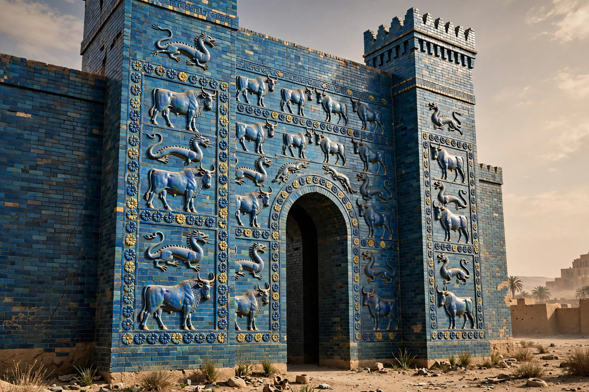

| Babylonia | |
|---|---|
| Region | Southern Mesopotamia (modern Iraq) |
| Capital | Babylon |
| Languages | Akkadian, Sumerian (liturgical), Aramaic (later) |
| Period | c. 1894 BCE – 539 BCE (and as a cultural region into the Hellenistic age) |
| Notable rulers | Hammurabi; Nebuchadnezzar II |
| Chief god | Marduk |

Babylonia was an ancient Akkadian-speaking state and cultural region of southern Mesopotamia, in present-day Iraq, centred on the city of Babylon. Across two great flowerings — the Old Babylonian empire of Hammurabi in the 18th century BCE and the Neo-Babylonian empire of Nebuchadnezzar II in the 6th century BCE — Babylonia shaped law, mathematics, and astronomy for the entire ancient Near East.
Babylon rose to power under the Amorite dynasty founded by Sumu-abum; its sixth king, Hammurabi (r. c. 1792–1750 BCE), united Mesopotamia and promulgated his famous law code. The city was sacked by the Hittites in 1595 BCE and ruled for centuries by Kassite kings, then contested among Assyrians, Chaldeans, and Elamites. Independence returned with Nabopolassar (626 BCE), whose son Nebuchadnezzar II destroyed Jerusalem, deported the Judahites (the Babylonian captivity), and rebuilt Babylon in splendour — its ziggurat Etemenanki, the Ishtar Gate, and, in later tradition, the Hanging Gardens. In 539 BCE Cyrus the Great of Persia took Babylon with little resistance, ending Babylonian empire, though the city remained a great centre of learning under Persian and Hellenistic rule.
Babylonian scribes wrote in cuneiform on clay tablets, preserving literature such as the Epic of Gilgamesh and the creation epic Enuma Elish, recited at the New Year festival to glorify Marduk. Babylonian mathematics used a sexagesimal (base-60) system — the ancestor of our 60-minute hour — and computed sophisticated tables; Babylonian astronomers compiled centuries of eclipse and planetary records, invented the zodiac, and founded the horoscopic astrology later adopted across the ancient world.
The Babylonian pantheon adapted Sumerian gods to Akkadian names: Anu, Enlil, Ea, Shamash, Ishtar, and above all Marduk, city god of Babylon, elevated to head of the pantheon as Babylon's political star rose. Temples with towering ziggurats dominated the cities, and the king's legitimacy rested on taking the hand of Marduk's statue at the annual Akitu festival.
Babylon · Hammurabi · Marduk · Enuma Elish · Mesopotamia · Assyria